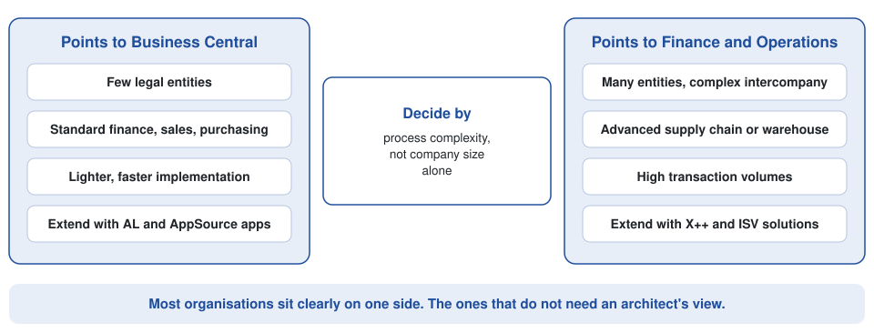
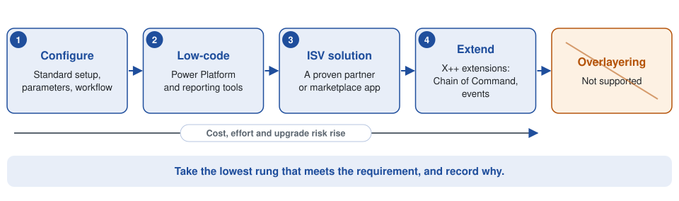
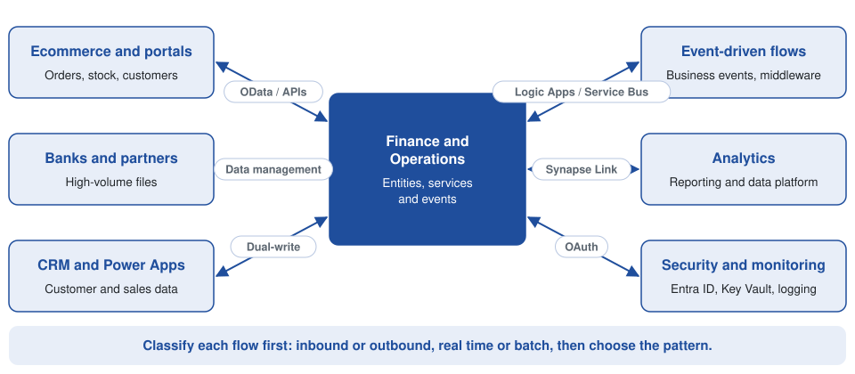
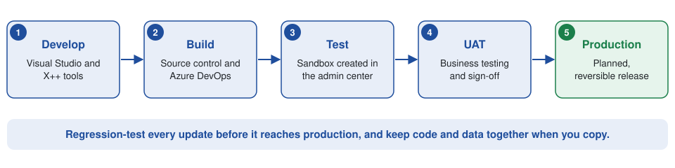
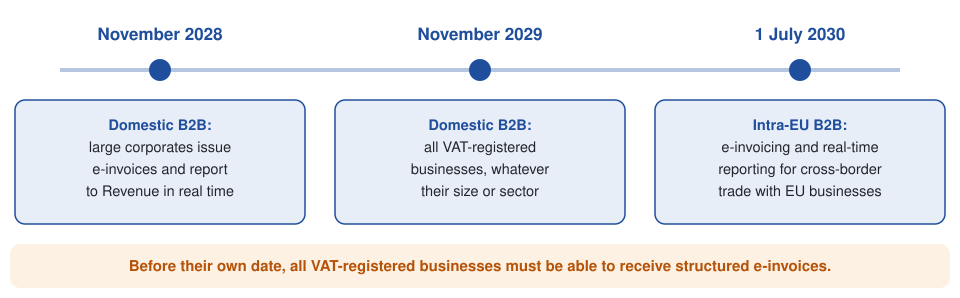

Dynamics 365 Finance and Operations Solutions Architect in Ireland
If you are looking for a Dynamics 365 Finance and Operations solutions architect in Ireland, you are probably at one of three points: choosing the platform, partway through a project that is drifting, or preparing to move off Dynamics AX or another ERP. In all three, the decisions that cost the most are architectural, and most of them are made in the first few weeks. This guide sets out what a solutions architect does on a Finance and Operations project, the decisions that matter, and the Irish-specific issues to plan for.
What does a Dynamics 365 Finance and Operations solutions architect do?
A solutions architect owns the shape of the whole solution: what is configured, what is extended, what is integrated, what is migrated and how it all keeps working through Microsoft’s frequent updates. Project managers own the plan and consultants own the functional areas. The architect is the person who can say whether the pieces fit together, and who is accountable when they don’t.
| Phase | What the architect decides | What goes wrong without it |
|---|---|---|
| Fit-gap | What standard covers, what needs an extension, what needs another tool | Customisation grows and requirements surface late |
| Solution blueprint | Legal entities, financial dimensions, process design, security model | Rework after build; reports that cannot answer Finance’s questions |
| Data migration | Scope, mapping, cleansing, rehearsals, reconciliation | Opening balances that never reconcile |
| Integration | Patterns, middleware, error handling, security | Fragile point-to-point links and duplicate transactions |
| Environments and release | Environment strategy, source control, build, testing | Deployment surprises and untested updates |
| Compliance and security | Segregation of duties, VAT and e-invoicing readiness, data protection | Audit findings and compliance rework |
| Go-live and support | Cutover plan, readiness criteria, support model | Going live on hope instead of evidence |
Is Finance and Operations the right platform?
A good architect will tell you when the smaller product is the better answer. Dynamics 365 Finance and Operations and Dynamics 365 Business Central overlap, and there is no single revenue or headcount line that separates them. What separates them is process complexity.

Finance and Operations earns its cost when you have many legal entities with intercompany flows, demanding manufacturing, warehouse or distribution requirements, or transaction volumes that a lighter product will struggle with. If your needs are mainly finance, sales, purchasing and inventory in one or a few entities, read the companion guide on the Business Central solutions architect role in Ireland before committing to the larger platform.
Fit-gap: extend, never rewrite
Microsoft is explicit that extensions are the customisation model for Finance, Supply Chain and Commerce. Its extensibility guidance states that overlayering is not supported and provides guidance for migrating existing overlayered code to extensions (Microsoft Learn). The extension mechanisms it documents include class extensions with Chain of Command, event handlers, delegates, and table and form extensions.

The practical consequence is that every gap you decide to fill is code you will regression-test through every update for as long as you run the system. Rules I apply on fit-gap workshops:
- Every gap gets an owner and a cost. If nobody on the business side will defend it, it doesn’t get built.
- Configuration first. Many “gaps” are really unfamiliarity with standard setup, parameters and workflow.
- Wrap, don’t replace. Use Chain of Command and events to add behaviour around standard logic rather than reimplementing it.
- Keep extensions small and testable. A custom feature should be explainable on one page and covered by an automated test.
- Keep a design-authority log. Record each customisation, the alternatives considered and who approved it.
If you are carrying legacy code from an older system, the same logic applies. See Dynamics AX 2012 to Dynamics 365 Finance and Operations: How to Plan the Move.
Integration architecture
Finance and Operations rarely stands alone. It exchanges data with ecommerce platforms, banks, CRM, warehouse and logistics systems, payroll, reporting platforms and Microsoft Power Platform. Microsoft’s general integration guidance names the main building blocks: OData and web APIs for real-time requests, the Data Management Framework for bulk import and export, dual-write for real-time synchronisation with Dataverse, and Azure services such as Logic Apps, Service Bus and Synapse Link (Microsoft Learn).

The pattern matters less than the discipline around it. The principles I design to:
- Classify every flow. Inbound or outbound, synchronous or asynchronous. Microsoft’s guidance matches high-frequency flows such as ecommerce to real-time integration, and lower-frequency, high-volume work such as financial reporting to batch processing.
- Put routing and error handling in middleware. Logic Apps or Service Bus give you one place to see, retry and alert on failures, instead of error handling scattered across point-to-point links.
- Decide data ownership up front. Each field has one system of record. Two systems editing the same data is where conflicts start.
- Make every message safe to send twice. Idempotency is what stops a retry from creating a duplicate invoice.
- Secure it properly. Microsoft Entra ID and OAuth for authentication, secrets in Azure Key Vault, HTTPS and TLS 1.2 for transfers.
- Monitor and reconcile. Application Insights for failures, and a scheduled reconciliation that proves both systems agree.
The same thinking applies across Dynamics products; Business Central Integration: What Are the Options? covers the equivalent choices on the Business Central side.
Environments, release management and the Power Platform admin center
How you build, test and release matters as much as what you build. Finance and Operations environments can now be created and managed through the Power Platform admin center. Microsoft’s documentation lists create, copy, backup and restore as available operations, notes that a copy always carries code with the data, and states that developer all-in-one virtual machines are no longer deployed: developers use Visual Studio with the Power Platform and X++ tools and deploy to a sandbox provisioned in the admin center. A licence and at least 1 GB of available operations and Dataverse database capacity are needed to provision another environment (Microsoft Learn).
The same page is clear that some Lifecycle Services capabilities, including methodology, build environments and the business process modeler, are not implemented in the admin center and points to alternatives such as Azure DevOps. Feature parity is moving, so I check the current position at the start of each engagement rather than assuming it.

What a sound release architecture includes:
- Source control and automated builds from the first sprint, not as a go-live task.
- An environment strategy that matches your capacity and licences, with named purposes for each sandbox.
- A regression test pack that runs against every service update before it reaches production.
- A cutover rehearsal that is timed and repeatable.
Data migration is an architecture workstream
Migration fails when it is treated as an import task at the end of the project. The architect sets the scope, the mapping approach (especially for financial dimensions and the chart of accounts), the number of rehearsals and the reconciliation evidence Finance will accept at sign-off. The same discipline applies whether the source is Dynamics AX, NAV, Integra or a bespoke finance system. My detailed guides cover the approach: Business Central Data Migration: The Complete Guide, ERP Data Migration: A Practical Approach That Holds Up at Go-Live and NAV to Business Central Data Migration. The principles transfer directly to Finance and Operations.
Irish considerations
VAT and Revenue reporting. Treat Irish VAT, VAT returns and any Revenue-specific reporting as explicit fit-gap items. Validate them in workshops with your Finance team and your tax adviser rather than assuming standard setup covers them.
E-invoicing is coming. Ireland has announced phased mandatory B2B e-invoicing and real-time reporting. Based on the timeline published by Matheson in October 2025, large corporates fall in scope for domestic B2B in November 2028, all VAT-registered businesses in November 2029, and intra-EU B2B on 1 July 2030, with every VAT-registered business needing to be able to receive e-invoices before its own date (Matheson). Dates and formats can change as Revenue finalises the detail, so confirm them with Revenue and your tax adviser.

For an ERP implemented today that will still be running in 2030, the architectural implication is simple: design invoicing, tax and integration layers so that structured e-invoice output and real-time reporting can be added without reworking the core solution.
Other items to validate rather than assume: Irish payroll and pension interfaces, Relevant Contracts Tax where it applies to you, SEPA and bank file formats, euro and sterling handling if you trade in both, and data protection and retention requirements under GDPR.
Common architecture mistakes
- Treating fit-gap as a sales exercise instead of a cost-and-risk exercise.
- Customising to replicate the old system rather than fixing the process.
- Designing financial dimensions around today’s org chart instead of the reporting Finance needs.
- Building integrations point to point with no monitoring or reconciliation.
- Leaving source control, builds and regression testing until late in the project.
- Running one data migration instead of several rehearsals.
- Deferring security design and segregation of duties until testing.
- Discovering compliance requirements, such as Irish VAT reporting, in user acceptance testing.
What a solutions architect should deliver
- A solution blueprint covering scope, legal entities, dimensions, process flows and security.
- A fit-gap register with a decision and an owner for every gap.
- An integration catalogue showing every interface, its pattern, owner, volume and failure handling.
- A data migration strategy with mapping, rehearsal plan and reconciliation criteria.
- An environment and release strategy with the test and cutover plan.
- A compliance and security view, including Irish VAT and e-invoicing readiness.
- Go-live readiness criteria that Finance and the business agree in advance.
When to bring in a solutions architect
The highest-value moments are before you sign a statement of work, at design sign-off, and when a project is off track. An independent review of a partner’s proposal or blueprint costs a small fraction of the customisation and rework it can prevent. Engagements typically take one of three forms: a fixed-scope review, a part-time design authority alongside your implementation partner, or an interim lead architect for the duration of a phase.
Frequently asked questions
What does a Dynamics 365 Finance and Operations solutions architect do?
They own the end-to-end design: fit-gap, solution blueprint, integration, data migration, environments and release, security and compliance, and go-live readiness. They make sure the parts fit together and that the solution stays supportable through Microsoft’s regular updates.
Can Finance and Operations be customised by changing standard code?
No. Microsoft states that extensibility is the customisation framework and that overlayering is not supported. Custom behaviour is added through extensions such as Chain of Command, event handlers, and table and form extensions.
Should we choose Finance and Operations or Business Central?
It depends on process complexity: the number of legal entities, intercompany flows, supply chain and warehouse demands, and transaction volumes. See the comparison above, and the Business Central solutions architect guide.
Does Irish e-invoicing affect an ERP implementation today?
Yes. Ireland’s announced timeline starts in November 2028, which is within the life of any system implemented now. Design the invoicing, tax and integration layers so structured e-invoices and real-time reporting can be added later without rework.
Can you work remotely with organisations across Ireland?
Yes. I work remotely with organisations across Ireland.
Work with a Dynamics 365 Finance and Operations solutions architect in Ireland
I provide independent solutions architecture for Dynamics 365 Finance and Operations, drawing on more than 30 years’ experience across ERP, software engineering, data and enterprise systems. Typical engagements:
- Solution architecture and design authority for new implementations
- Fit-gap and blueprint reviews, including independent review of a partner’s proposal
- Integration architecture across APIs, Azure, Power Platform and Dataverse
- Data migration strategy and reconciliation, including Dynamics AX 2012 moves
- Project health checks and go-live readiness reviews
- Reporting and data platform design with Power BI, Azure SQL and ETL
If you are choosing a platform, reviewing a design or rescuing a project, tell me where you are and I will tell you where I can help. Contact me at declan@feelyconsultants.com or on LinkedIn.
Feely Software Consultants · Ireland | Remote Dynamics 365 Consulting